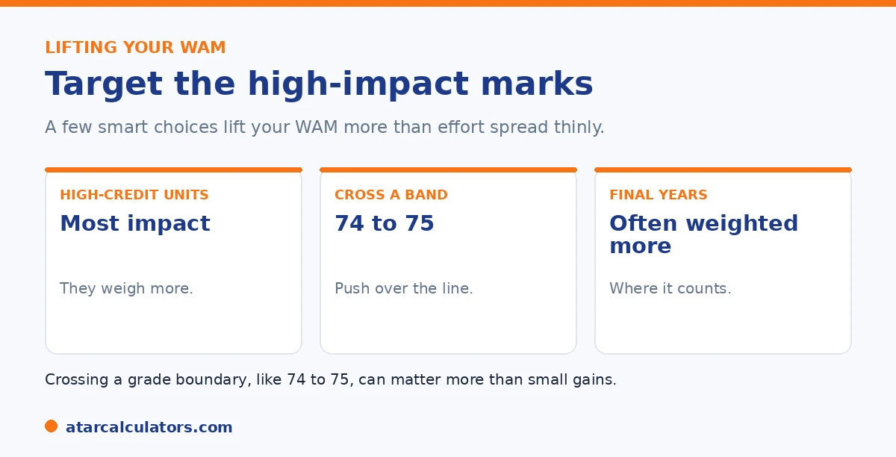

Here is the short version. To lift your WAM efficiently, focus on high-credit units. They carry the most weight. Aim to cross grade boundaries like 74 to 75, where a small gain matters most. Perform strongly in later years, which often count for more. Where your university allows it, retaking a failed unit can also help. Target your effort rather than spreading it evenly.
Improving your WAM is not just about working harder, but working where it counts. A few smart choices lift your average more than effort spread thinly.
Below are the most effective strategies. To see your current WAM, use our WAM calculator.
Key takeaways
- Focus on high-credit units; they weigh most.
- Aim to cross grade boundaries, like 74 to 75.
- Perform strongly in later years.
- Retaking a failed unit can help, where allowed.
- Target your effort rather than spreading it evenly.
- Small, well-placed gains add up.
Focus on high-credit units
Because your WAM is weighted by credit points, high-credit units have the most influence. A strong mark in a large unit lifts your WAM more than the same mark in a small one. So that is where focused effort pays off most.

So when you plan your study time, give extra attention to your highest-credit units. They move the needle furthest. See our guide on how WAM is calculated.
Cross grade boundaries
A small gain matters most when it crosses a grade boundary. Lifting a mark from 74 to 75 moves you from Credit to Distinction. That can matter for grade-based purposes, and every extra mark lifts your WAM directly.
So if a unit is sitting just below a boundary, a little extra effort there can be very efficient. Identify your near-miss units and target them. See our guide on what counts as a good WAM.
This is the single most efficient WAM strategy. This is because the payoff is concentrated where you are already close. A student sitting on 64, 74 or 84 in a unit is one mark from the next grade band. So a modest push there is far better value than the same effort spread across units where you are comfortably mid-band. The way to use this is to look at your predicted marks near the end of session. Pick out the units hovering a point or two below a boundary. Then concentrate your remaining revision and assessment effort on those. It matters most in two situations. It matters most for GPA purposes, where crossing a boundary changes your grade points and can visibly lift your GPA. It also matters near the honours or graduation thresholds, where a single boundary can decide which classification you get. The trap to avoid is over-investing in a unit you have already secured, or one that is hopelessly out of reach. The marginal mark is worth chasing precisely when it changes something. Combine this with focusing on your highest-credit units and you are directing effort exactly where it moves your WAM most.
Want to see your WAM?
Try the WAM calculator →Perform strongly in later years
At many universities, later-year units are weighted more heavily than first-year ones. So strong marks in your final years count for more toward your WAM than the same marks earlier.
This is encouraging if your first year was rocky: your later results can carry more weight. So finishing strongly can lift your WAM meaningfully. Check whether your university uses year weighting. See our guide on why a WAM can drop.
Retaking a failed unit
If you have failed a unit, retaking and passing it can lift your WAM. This is because some universities replace the fail mark with the new result. This can give an immediate boost by removing a low mark.
Policies on grade replacement vary, so check yours before re-enrolling. Where it applies, it is one of the most direct ways to recover a WAM hit. See our guide on how WAM is calculated.
Every mark counts for WAM
A key difference from GPA is that WAM uses your exact marks, so every mark counts directly. You do not need to cross a grade boundary to improve your WAM; any mark you gain, in any unit, lifts your average. This makes small, broad improvements worthwhile.
So while boundaries matter for your grades, for WAM the whole focus is simply on scoring as many marks as you can. A few extra marks across several units add up directly in your WAM.
Use free academic support
Most universities offer academic support you have already paid for: writing centres, maths and stats help, study skills workshops, and consultation time with tutors. Using them can lift your marks, and every mark helps your WAM.
Booking a session before a major assessment, or getting feedback on a draft, often makes a real difference to your mark. Because WAM counts every mark, these gains flow straight into your average.
Choose well-suited electives
Where you have elective choices, picking units that suit your strengths can lift your WAM. A well-chosen elective you can score highly in adds strong marks to your average, while a poorly chosen one can drag it down.
So choose electives you are genuinely good at and interested in, not just ones that sound easy. Strong marks in units that suit you are one of the more reliable ways to lift your WAM.
Make a plan and track it
Before adding study, make a plan: list your units, your current marks, and where the next marks are easiest to gain, weighting high-credit and later-year units where they count more. Then focus your effort there and re-check your WAM each semester.
Because WAM uses your exact marks, a clear, targeted plan pays off directly. See the WAM calculator to model how specific marks would change your average.
Track your progress
Re-check your WAM each semester as your marks come in, so you can see whether your effort is working and where to focus next. Because WAM uses your exact marks, a rising average is a direct measure of your progress.
Update your marks after each round of results, and adjust where you put your effort if the number is not moving. See the WAM calculator to model how specific marks would change your average.
Common questions
How do I boost my WAM?
Focus on high-credit units, which carry the most weight. Aim to cross grade boundaries like 74 to 75. Perform strongly in later years, which often count for more. And retake failed units where your university allows grade replacement.
Can I raise my WAM in my final year?
Yes, often more than you might expect. Many universities weight later-year units more heavily, so strong final-year marks count for more. Finishing strongly can lift your WAM meaningfully, even after a rocky start.
Does retaking a unit improve my WAM?
It can. Some universities replace a failed unit's mark with the new result when you retake and pass, giving an immediate boost. Policies on grade replacement vary, so check yours before re-enrolling.
Why focus on high-credit units?
Because your WAM is weighted by credit points. So high-credit units have the most influence. A strong mark in a large unit lifts your WAM more than the same mark in a small one, making it the most efficient focus.
Does crossing a grade boundary matter for WAM?
Every extra mark lifts your WAM directly, and crossing a boundary like 74 to 75 also moves you from Credit to Distinction. So targeting units sitting just below a boundary can be a very efficient use of effort.
See your WAM
Add your units and marks to see your WAM and test improvements. Free, and no signup.
Open the WAM calculator →Related guides
This guide is general information for students, not formal academic advice. WAM and GPA policies, grade bands and honours thresholds vary by university and faculty, and can change. Failed units, year weighting and which units count are all set by each university. Always confirm with your own university's official grading and WAM policy, such as the University of Sydney or your own institution. Reviewed by the ATARCalculators Editorial Team.